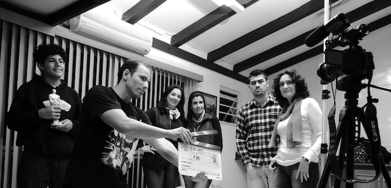

Must learn these things in acting field
- HISTORY OF FILMS AND ACTING
- STANISLAVSKY'S THEORY OF ACTING (approch to theatre and film acting)
- IDENTIFYING & OVERCOMING INHIBITIONS , FEAR AND COMPLEXES(MIND STRENGTHENING
- YOGA (MIND DEVELOPMENT)
- SILENT ACTING(EXPRESSING THROUGH EMOTIONS AND BODY LANGUAGE)
- MARTIAL ARTS (FOR ACTION SCENES)
- RAMP WALK (BODY BALANCE)
- WESTERN AND BOLLYWOOD / INDIAN DANCE (FOR FILMS AND VIDEOS,ETC)
- VOICE CULTURE(IMPROVING TONE)
- DICTION & SPEECH (COMMUNICATION SKILL)
- REONATORS (VOCAL TUNING)
- MAKE UP
- RECITATION (IMPROVE MEMORY)
- DIFFERENT PATTERNS OF SPEECH(ORAL EXPRESSION)
- OBSERVATION AND IMAGINATION (CREATIVITY)
- RHYTHM (TIMING AND PACING)
- BODY LANGUAGE (POISE)
- TEXT ANALYSIS (UNERSTANDING SCRIPTS)
- CHARACTER DEVELOPMENT (GETTING INTO CHARACTER ROLE)
- IMPROVISATION (UNSCRIPTED DIALOGUE)
- ACTING STYLES (ACTING ROLE TYPE)
- ACTING FOR CAMERA
- AUDITION TECHNIQUES
- DUBBING (NEW LANGUAGE OR SOUND TO A SCENE)
9 EMOTIONS AND 42 ATTITUDE IN ACTING
1) 9 EMOTIONS
- comedy: hasya ras
- wonder: adbhut ras
- fear : bhayanak ras
- peace : shant ras
- sad : karun ras
- love/romance : shringhar ras
- disgust : vibhats ras
- anger : raudra ras
- brave : veer ras
2) 42 ATTITUDE
- aggresive: aakramak
- anxious: chintit
- arrogant: abhimani
- ambitious: mehtavkankshi
- affectionate: snehi
- bored: ubb
- confident: aatam vishvas se lablez
- curious: jigyasu
- determined: nirdharit
- disapproval: anumoden
- dejected: udas
- defeated: prajit
- drunk: nashe
- easy going: aaram pasand
- fed up: pareshan
- foolish:
- happy: khush
- horrified: bhayatur
- hurt(physically or mentally): chot
- humorous: ras lenewala
- indecisive: duvidha me pda hua
- irritating: chidchida
- imaginative: kalpnasheel
- indifferent: udaseen
- innocent: masum
- interested: ichuk
- jealour: ersha
- looking suspenceful: duvidha me
- lonely: akelapan
- meditative: dhyan
- miserable: dukhi
- obstinate: jiddi
- optimistic: aashawadi
- puzzled: fasa hua
- regretful: pachtawa krta hua
- relieved: rahat mili
- sheepish: dabbu
- suspicious: sandehjanak
- sympathetic: sahanubhutipurn
- sleepy: sust
- stiff neck: akdu
- shy: sharmila